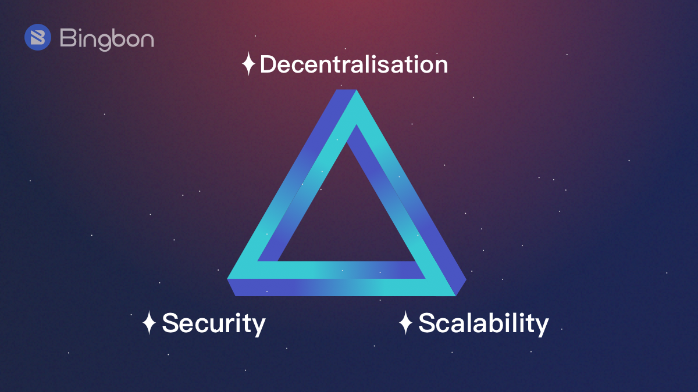

¿Qué es el trilema de la blockchain?

Las cadenas de bloques solamente son capaces de manejar un determinado número de transacciones por segundo.
Hablando de las dos redes más grandes que existen actualmente, en el caso de Bitcoin se pueden gestionar hasta siete transacciones por segundo, y en el caso de Ethereum se gestionan unas 13 transacciones cada segundo.
Como podéis comprobar, si la tecnología Blockchain tuviera una adopción masiva en todo el mundo tendría que poder manejar muchos más datos y a más velocidades para que realmente todo el mundo se pudiera beneficiar de esta tecnología y no tuviera que esperar mucho tiempo en transmitir datos o transacciones y que tampoco tuviera que pagar tasas demasiado costosas.
Para esto tendría que aumentar la escalabilidad, pero el problema es que el diseño de muchas redes descentralizadas implica que este aumento de escalabilidad tienden a debilitar tanto la descentralización como la seguridad y estos son dos pilares fundamentales de la tecnología Blockchain.
Esto es precisamente lo que se conoce como el Trilema de la cadena de bloques o el Trilema de la Blockchain, y es precisamente lo que vamos a abordar en el vídeo de hoy.
En resumidas cuentas, la Blockchain es una gran base de datos que almacena información en forma de bloques, de forma descentralizada y distribuida. Esta información está protegida por algoritmos criptográficos para darle todavía más seguridad a la cadena.
La idea principal de esta tecnología es conseguir un sistema mundial en el que no necesitemos depender de terceros para que funcionen las redes o los mercados.
Pero el problema de esto como hemos dicho antes, es que al adoptar esa tecnología masivamente, nos encontramos con el Trilema Blockchain.
Este término fue acuñado por fundador de la Blockchain de Ethereum, Vitalik Buterin, Y la clave para entenderlo es comprender que cuando las cadenas de bloques alcanzan niveles y volúmenes muy grandes, es muy difícil mantener en valores aceptables la calidad de nuestros tres pilares fundamentales: descentralización, seguridad y escalabilidad. El aumento de uno generalmente produce que otro se debilite.
Para entender todo esto más en profundidad, vamos a explicar en profundidad cada uno de estos tres pilares.